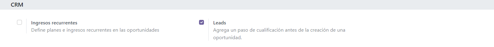
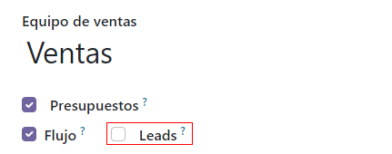
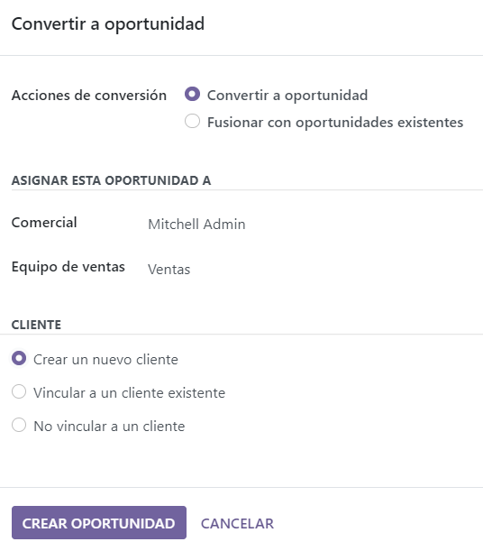
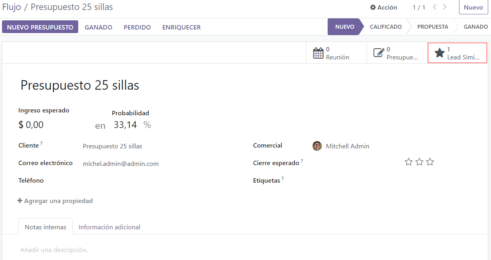

Convert leads into opportunities¶
¿What is a lead? A lead is a potential customer who has shown interest in your product or service. Leads act as qualifying steps before an opportunity is created. This provides additional time before a potential opportunity is assigned to a sales person.
Configuration¶
To activate the Leads setting, navigate to and check the box labeled, Leads. Then, click Save.
Activating this feature adds a new menu, Leads, to the header menu bar at the top of the screen.

Once the Leads setting has been activated, it applies to all sales teams by default. To turn off leads for a specific team, navigate to . Then, select a team from the list to open the record, and uncheck the Leads box. Once done, click Save.
Convert a lead into an opportunity¶
To convert a lead into an opportunity, navigate to , and click on a Lead from the list to open it.
In the upper-left corner of the screen, click the Convert to Opportunity button, which opens a Convert to opportunity pop-up window.
On the Convert to opportunity pop-up window, in the Conversion action field, select the Convert to opportunity option.
Note
If a lead, or an opportunity, already exists in the database for this customer, Odoo automatically suggests merging both leads/opportunities. For more information on merging leads and opportunities, see the section on how to merge leads below.
Then, select a Salesperson and a Sales Team to which the opportunity should be assigned.
If the lead has already been assigned to a salesperson or a team, these fields automatically populate with that information.
Under the Customer heading, choose from the following options:
Create a new customer: Choose this option to use the information in the lead to create a new customer.
Link to an existing customer: Choose this option, then select a customer from the resulting drop-down menu, to link this opportunity to the existing customer record.
Do not link to a customer: Choose this option to convert the lead, but not link it to a new or existing customer.
Lastly, when all configurations are complete, click Create Opportunity.
Note
Don’t worry, if you want to create a customer record from this lead later, you can do it. This is useful to avoid filling up the database with potential customers who have been lost along the way.
Merge leads and opportunities¶
Odoo automatically detects similar leads and opportunities by comparing the email addresses of the associated contacts. If a similar lead/opportunity is found, a Similar Lead smart button appears at the top of the lead/opportunity record.
To compare the details of the similar leads/opportunities, click the Similar Leads button. This opens a kanban view with only the similar leads/opportunities. Click into each card to view the details for each lead/opportunity. To merge the two opportunities, switch to the list view, select both opportunities and click the action button. In the dropdown menu, you will see the merge button.
Important
When merging, Odoo gives priority to whichever lead/opportunity was created in the system first, merging the information into the first created lead/opportunity. However, if a lead and an opportunity are being merged, the resulting record is referred to as an opportunity, regardless of which record was created first.
After confirming that the leads/opportunities should be merged, return to the kanban view using breadcrumbs, or by clicking the Similar Lead smart button. Click the ☰ (three vertical lines) icon to change to list view.
Check the box on the left of the page for the leads/opportunities to be merged. Then, click the Action ⚙️ (gear) icon at the top of the page, to reveal a drop-down menu. From that drop-down menu, select the Merge option to merge the selected opportunities (or leads).
When Merge is selected from the Action ⚙️ (gear) drop-down menu, a Merge pop-up window appears. In that pop-up window, decide to Assign opportunities to a Salesperson and/or Sales Team.
Below those fields, the leads/opportunities to merge are listed, along with their related information. To merge those selected leads/opportunities, click Merge.
Note
When merging opportunities, no information is lost. Data from the other opportunity is logged in the chatter, and the information fields, for reference.